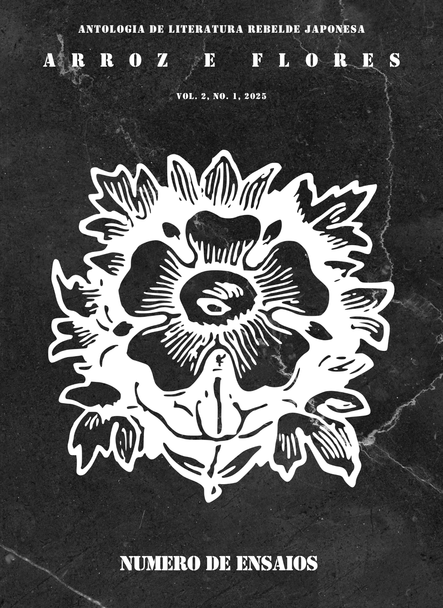

vol. 2, no. 1 (2025): número de ensaios

O segundo número do segundo volume da arroz e flores é um especial dedicado à Higuchi Ichiyô (1872-1896). O número conta com uma breve contextualização histórica e sociocultural do Japão em que Higuchi viveu. Subsequentemente, são apresentadas as traduções de três textos de Higuchi: Último dia do ano, Enseada de águas turvas e Ombro a ombro. O número pode ser descarregado e/ou acessado através dos links abaixo.
Convidamos todos a conhecer um pouco da produção de Higuchi através deste número e ter contato com um Japão um tanto diverso daquele retratado rotineiramente.
Boa leitura!
Axé e Revolta-te!
Miolo
- Editorial I (pp. 07-27)
Fernanda Ferreira Gonçalves
- Último dia do ano (Trad.) (pp.
28-67)
Higuchi Ichiyô. Trad. Felipe Chaves Gonçalves Pinto
- Enseada de águas turvas
(Trad.) (pp.
68-138)
Higuchi Ichiyô. Trad. Rika Hagino
- Ombro a ombro (Trad.)
(pp. 139-271)
Higuchi Ichiyô. Trad. Gustavo Perez Katague
- Editorial II (pp. 272-276)
arroz e flores